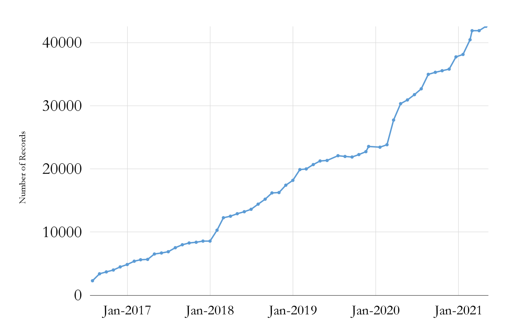
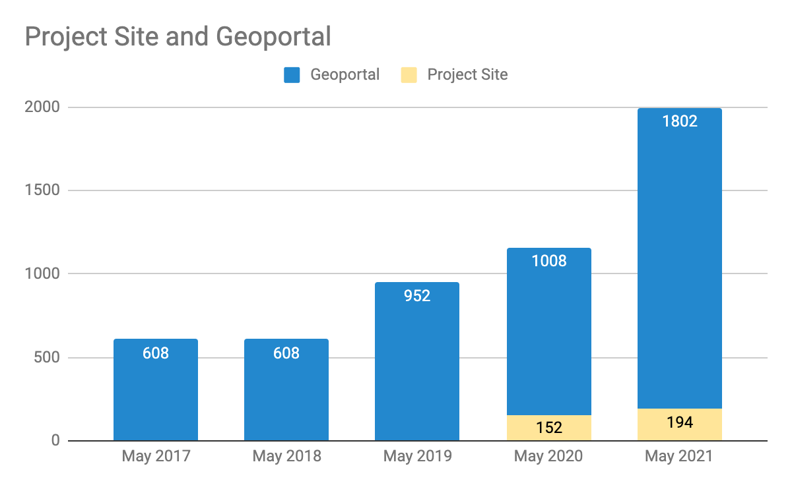

Big Ten Academic Alliance Geospatial Data Project
Project Update: May 2021
Table of Contents


Project Highlight for May
GEOMG: New Metadata Editor Tool in production
This month\, we implemented an integrated metadata management and editing tool into our production workflow. This new tool\, GEOMG\, is a project that the Application Developer and the Project Manager/Metadata Coordinator have been working on for over a year.
The new tool streamlines several aspects of our processing workflow including:
records can be batch imported and exported as CSV files
records can be exported as a variety of GeoBlacklight schemas as JSON files
individual records can be created or updated using a form-based editor
records can be published or unpublished from Solr (index for the BTAA Geoportal)
the tool validates records upon upload for required elements\, duplicated IDs\, and malformed bounding boxes
We plan to continue refining GEOMG for our own use as well as to offer it as a plugin for the GeoBlacklight Community. In the few weeks that it has been in production\, we have been able to process thousands of new records more efficiently and with better quality control.

Statistics: Item Records
Total Item Records
42\,579
May. 2021 actions
2160 new records
3 new collections
1615 retired ArcGIS Hub records*
* A full refresh of ArcGIS Hubs revealed many outdated records .


Statistics: Geoportal & Blog Users
Geoportal & Project Site* users for the months of May (2017-2021)
*Blog\, Help\, Tutorials\, Conference info


Statistics: Top Pages
| Top Viewed Items | Top Downloaded Items |
|---|---|
Wisconsin Historic Aerial Imagery Finder (Aerial Photos 1937-41) (293) PennPilot (Historical Aerial Photo Library): Pennsylvania (56) Remonumented Section Corners: Michigan (51) |
Parcels: Hamilton County, Indiana (23) Geologic atlas of Dakota County, Minnesota, C-6, Plate 2, Bedrock Geology (12) PennPilot (Historical Aerial Photo Library): Pennsylvania (10) |

Activities: Committees
Metadata Committee
Conducted a metadata sprint that resulted in date and subject cleanup for 196 maps
Collection Development Committee
Prepped instructions for a Collections sprint
Communications Committee
Developing next round of blog posts as interviews
continuing selected ad campaigns
Interface Committee
Compiled recommended actions for usability to be undertaken by application developer

Activities: Working Groups
- Education Outreach Working Group (phase 2)
- Working on tutorial drafts
- Diverse Collections Working Group
- Developing framework for defining next steps

- June _: _
- Deliver lightning talk presentation about GEOMG to GeoBlacklight Community
- Conduct combined collections and blog post sprint
- July : WAML/Magirt webinar presented by all committee chairs
- August: _ _New / Reorganized Committee chairs and members meet\, including a new committee\, called “Education Outreach”.